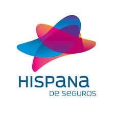

TU GUÍA RÁPIDA
El Seguro no es un gasto, es una Inversión
📞
TELEMEDICINA Y ASISTENCIA 24/7
Toca cualquier número para llamar directamente desde tu celular:
0500-HISPANA
(0500-4477262) Llamada gratuita
0212-313.85.74
Línea fija nacional
0412-372.05.75
Celular / Asistencia directa
¿Cómo solicitar atención médica remota?
- Validación: El Call Center solicita tus datos personales y valida tu cobertura de seguro.
- Orientación: Un médico evalúa las condiciones de salud y define el plan de tratamiento o gestiona el traslado inmediato hacia un centro privado si es necesario.
🏥
SALAS DE URGENCIAS A TU ALCANCE
Policlínica Las Industrias
Sala de Urgencias y Atención Médica
Urgent Care
Concepto La Viña, Piso 5
Clínica Valles de San Diego
Sala de Urgencias y Emergencias
⏰ ATENCIÓN LAS 24 HORAS DEL DÍA, LOS 365 DÍAS DEL AÑO
🛡️
SERVICIOS A TU ALCANCE
- 🩺 HCM (Hospitalización, Cirugía y Maternidad)
- 📱 Telemedicina 24/7
- 💊 Entrega de Medicamentos
- 🚑 Atención In situ
- 🚨 Urgencias
- 🏥 Emergencia